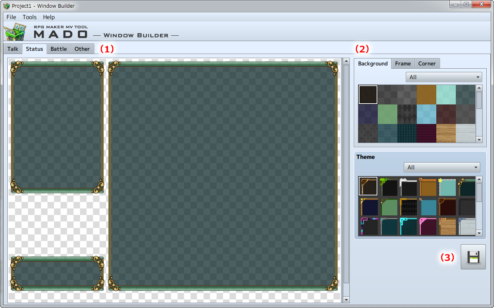

Basic Operations
Window Part Names and Functions
In the Window Builder screen there is the "Scene Tab" for selecting a scene, the "Parts Tab" for selecting the window image,
and the "Export Button" for saving created Windows.

- (1) Scene Selection
-
Select [Dialogue], [Status], [Battle], or [Other] from the Scene Tab.
[Basic Operations] →[Scene Selection] - (2) Image Selection
-
Choose the [Background], [Frame], and [Corner] images from the Parts Tab.
[Basic Operations] →[Image Selection] - (3) Export Window
-
Export the Window created to the selected MV Project.
[Basic Operations] →[Export Window]